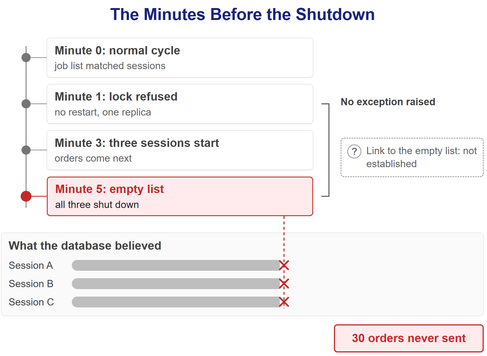
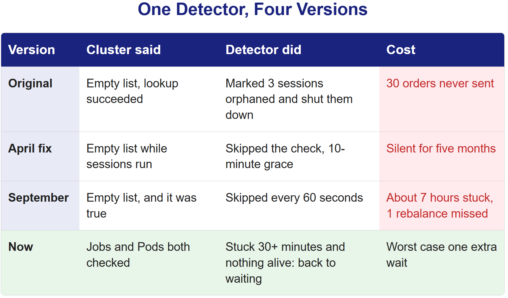

A quiet alarm screen hid a failing grid in 2003. An empty list told our cleanup process that nothing was running. It shut down three live sessions.
On August 14, 2003, the alarm software in FirstEnergy's Ohio control room stalled, and for over an hour no one in the room knew. With no alarms on their screens, an operator dismissed a call warning of a tripped line. By late afternoon, the blackout covered an area with an estimated 50 million people.
Our version of that afternoon was smaller and stranger. A cleanup process asked our cluster which trading jobs were running, got back an empty list, and took it to mean nothing was running. It shut down three sessions minutes before they traded. Nothing had crashed.
The northeastern United States and southern Ontario from orbit on the night of the blackout. Photo: imagery from NOAA and the Defense Meteorological Satellite Program, via Wikimedia Commons, public domain.

Three Sessions, Thirty Orders
We run a system that trades crypto with real money and no human approving individual orders. A user uploads a strategy, the system runs it on a schedule, works out what the account should hold, and places the orders that close the gap.
One morning this spring, three of those sessions had finished computing their target positions and were waiting to execute: strategy done, orders about to go out. A background process that watches for abandoned work looked at them, decided all three had been orphaned, and shut them down. The database recorded the same reason for each: terminated, no job found.
Thirty orders across the three sessions never left. No exception was raised anywhere, and every component involved reported success.
What "Orphaned" Means
Each trading cycle runs as a short-lived Kubernetes Job. It starts, does one rebalancing cycle, and exits. That model is good for isolation and bad at one specific failure: if a Job dies unexpectedly, the database still says its session is in the middle of a cycle. Nothing on the cluster is running it, and nothing has told the database.
So there's a detector. It runs inside Finwatcher, the loop that records every account's results once a minute. On each pass it asks the cluster which Jobs exist, compares that with the sessions the database believes are mid-cycle, and any session without a Job gets marked orphaned. It exists to clean up after failures. That morning, the cleanup was the failure.
The Single Line
The detector's guard against a bad answer from the cluster was one condition: if the lookup came back as None, stop and do nothing.
# the guard as it was: an API exception came back as None and was skipped
if existing_job_labels is None:
return result
for session in running_sessions:
if job_label(session) not in existing_job_labels: # true for every session when the set is empty
deactivate(session)The cluster API can fail in two ways. It can raise (connection refused, timeout, unauthorized), and that path returned None and was handled. Or it can answer successfully with nothing in it.
An empty set is not None. It went straight through the guard, and then, for every running session, the code asked whether that session's Job was in the set. Against an empty set the answer is always no, so every session looked abandoned. Logicians call this vacuous truth: any statement about every member of an empty set is true, because there is no member to contradict it. Tony Hoare, who introduced the null reference in 1965, later called it his billion-dollar mistake. Our bug was its quieter cousin: the code checked for the absence it expected and walked past the one it didn't.
The logic was correct. It had been handed an empty answer and had no way to tell there is nothing running from I failed to see what's running.

The Second Thing in the Logs
Fixing the guard was straightforward. Reading those minutes of logs turned up a separate bug, and its first sign was something that didn't add up. From a few minutes before the sessions were shut down, our background loops kept reporting that a lock they need was held by another instance. There was exactly one instance of each, and none had restarted.
We couldn't explain that from what we had, so we added logging: whenever a lock was refused, print who held it, straight from the database's own view of its locks and connections. After the next deployment, the logs named the holder. It was a connection that had started before the current process existed, left over from the previous deployment. Its state was idle in transaction, and the last thing it had run was the lock request itself.
Here's the mechanism. The lock was a session-level advisory lock, which PostgreSQL holds until it is explicitly released or the session ends. It was taken through a pooled database connection, and the database library had quietly opened a transaction on it. When the code returned the connection to the pool, it went back with that transaction still open. When the process that owned it went away, the database side of the connection stayed, idle in its open transaction and still holding the lock. The process was dead. Its lock was not.
A lock scoped to a database session, sitting on top of a connection pool, can outlive the process that took it. Everything we reasoned about when we wrote acquire, do work, release assumed that if the process dies, its grip dies with it. On a pooled connection, it doesn't.
Whether this leaked lock and the empty list were connected, we never proved. They showed up within the same few minutes, and we fixed both. Only one of them ended the sessions: the empty list.
What We Changed in April
Two fixes, the same day.
The detector stopped treating an empty answer as the truth. If the cluster API succeeded but returned zero Jobs while the database said sessions were running, we read that combination as a failed observation and skipped the check. We also gave every running state a ten-minute grace period, so one ambiguous reading couldn't end a session in the middle of a cycle.
The lock moved off the pool. Each process now holds one dedicated connection in autocommit mode, so the connection can never sit idle inside a forgotten transaction, and the lock is released explicitly when the work is done.
The April fix rested on an inference: an empty job list and three active sessions can't both be true, so when they appear together, trust the database and distrust the cluster. It was a reasonable inference, and for five months it held.
Five Months Later, the Guard Did It Again
In September, a trading Job ended partway through a cycle without moving its session out of the running state. Every other session was between cycles, waiting for its next turn, so the cluster had no Jobs at all. That was the truth.
Zero Jobs and one running session: exactly the combination our April fix had decided was impossible. So every sixty seconds the detector logged "K8s returned 0 Jobs but 1 running sessions exist, skipping orphan check" and did nothing. The session sat for about seven hours without rebalancing. The guard we added to stop the detector from acting on a false emptiness kept it from acting on a real one.
Nothing was lost: the positions stayed exactly as they were, and because that account rebalances every six hours, the stall cost it one rebalance. But the lesson from April had been half right. An empty answer can be a failed look. It can also be the truth, and the April fix had bet on one reading the same way the original code had bet on the other.
The Detector in Four Versions

What Held
The fix that held changed what the detector does, not what it guesses.
A stuck session is no longer shut down, and its positions are never touched. When a session has sat in a cycle state for 30 minutes without a database update, the detector asks the cluster about both Jobs and Pods. If either lookup fails, it decides nothing and waits for the next pass. If both succeed and neither shows anything alive for that session, it sends the session back to waiting, with its next rebalance placed on its normal schedule, and raises an alert saying the positions were not touched.
Jobs lookup Pods lookup Anything alive? Action
fails - - do nothing, retry next pass
succeeds fails - do nothing, retry next pass
succeeds succeeds yes leave it running
succeeds succeeds no, 30+ minutes back to waiting, positions untouchedIf that judgment is right, trading resumes on time. If it's wrong, the cost is one extra wait. The empty-list guard is gone, because a cheap action doesn't need a guard against guessing wrong. This follows a rule we now apply everywhere: no failure of a server, a Job or the cluster is ever a reason to close a position.
The ten-minute grace from April is gone from this path. A session now has to sit 30 minutes before the detector does anything, and what it does is resume instead of shut down. A ten-minute window still exists for sessions past their end time, which is a different case.
The rule reached production at the end of September. Since then the session table holds no row that was ended as an orphan, and no job in the job history carries a failure message that mentions an orphan or a stuck session. That is the extent of what we can show, and it is thin: the session table keeps one row per account, so a later session overwrites an earlier one. The recovery path itself leaves no record in the database, only a log line and an alert, so we can't tell you how many times it has fired. That is a gap in our own records.
What We Don't Know
We identified the leftover connection by when it started, which points strongly at the previous deployment but doesn't prove it. The lock problem and the empty list showed up within the same few minutes, and we never traced exactly how one led to the other.
We also can't tell you what the thirty unsent orders cost. The sessions ended before execution, so there's no fill data to compare against. The loss is real but unmeasured, and we'd rather say that than invent a number.
The Part Worth Stealing
Almost every system has a cleanup process: something that lists what exists, compares it with what should exist, and removes the difference. Garbage collection, cache invalidation, session reaping, stale-file cleanup. Every one of them receives an empty result as the same value whether it means "there is nothing" or "I failed to look."
FirstEnergy's operators had a screen that said there were no alarms and nothing that said the alarm system itself had stopped. Our detector had a list that said there were no Jobs and nothing that said whether anyone had looked.
When "nothing is there" can't be told from "I couldn't see", better guessing is not the fix. Making the action cheap to get wrong is.
The question that settled our design was what the process would cost if the listing were wrong in either direction, and whether it could do something we could take back. Returning a session to waiting can be taken back. Closing a position can't.
Nothing crashed that morning. A list came back empty, and the code around it had no way to say whether anyone had looked.
Sources
- U.S.-Canada Power System Outage Task Force (2004). "Final Report on the August 14, 2003 Blackout in the United States and Canada: Causes and Recommendations" (alarm failure, pp. 51-56; the 14:32 call, p. 56; the affected area, p. 1). Link
- North American Electric Reliability Council (2004). "Technical Analysis of the August 14, 2003, Blackout: What Happened, Why, and What Did We Learn?" Report to the NERC Board of Trustees by the NERC Steering Group, archived copy. Link
- Kubernetes. "Jobs." Kubernetes documentation. Link
- PostgreSQL Global Development Group. "pg_stat_activity" (the
statecolumn), PostgreSQL documentation. Link - PostgreSQL Global Development Group. "Explicit Locking: Advisory Locks," PostgreSQL documentation. Link
- Psycopg. "Basic module usage: Transactions control," Psycopg 2 documentation. Link
- Hoare, C.A.R. (2009). "Null References: The Billion Dollar Mistake." QCon London. Link
- "Vacuous truth." Wikipedia. Link